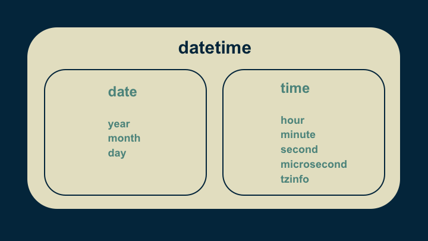

For video narration and slides, as well as other data processing tutorials, visit the Data Munging Tips and Tricks course page. It's free.
Wrangling dates and times in python
Python's datetime package is a convenient set of tools for working with dates and times. With just the five tricks that I’m about to show you, you can handle most of your datetime processing needs.
Before jumping in, it’s helpful to look at how datetime is put together. The fundamental building block is a datetime object. Not surprisingly, this is a combination of a date object and a time object. A date object is just a set of values for the year, the month, the day, and a collection of functions that knows how to handle them. A time object is structured in a similar way. It has values for the hour, the minute, the second, the microsecond, and the time zone. Any time can be represented by choosing these values appropriately.

1. combine()
import datetime
# (hours, minutes)
start_time = datetime.time(7, 0)
# (year, month, day)
start_date = datetime.date(2015, 5, 1)
# Create a datetime object
start_datetime = datetime.datetime.combine(
start_date, start_time)The first trick for working with datetimes is to be able to create them by combining date and time objects. We start by creating a time, passing it the hour of 7 and the minute 0. This represents 7 o’clock. Because we didn’t supply the second or the microsecond, these are assumed to be zero. Then we create a date by passing the year, month, and day.
Creating a datetime is straightforward. We use the combine() function, and pass it the date object and the time object that we want to build our datetime out of.
Because of the naming convention, calls to datetime can be confusing. Datetime is the name of the package, a module within the package, and the object. So when we combine our date and time, we call it with the apparently redundant datetime.datetime prefix. The first datetime references the package, the second datetime references the module, and combine() is a function within that module.
2. timedelta
# Differences between datetimes are timedelta objects.
timedelta_total = end_datetime - start_datetime
# timedeltas have days, seconds, and microseconds
# They can be used to increment dates and times,
# accounting for quirks of dates and timezones.
end_datetime = start_datetime + timedelta_totalThe second trick for using datetimes is a type called timedelta. This represents the difference between two datetimes. A timedelta has just three values: days, seconds and microseconds. The difference between any two datetimes can be uniquely represented in this way.
Timedeltas are incredibly useful because they allow us to do simple addition and subtraction arithmetic on datetimes. They remove the need to think about things like how many days are in a month, how many seconds are in a day, and leap years.
3. Timestamps
# Number of seconds from 12:00 am, January 1, 1970, UTC
# is a computer-friendly way to handle time.
unix_epoch = timestamp(start_datetime)
start_datetime = fromtimestamp(1457453760)The third trick for getting the most out of datetimes is the use of timestamps. Working in days, hours, minutes, and seconds is awkward for computers. There are rules and corner cases to check. In order to make dates and times easier to work with, the notion of a UNIX epoch was created. This is the number of seconds that have passed since 12:00 AM, January 1, 1970 in Coordinated Universal Time (the UTC +0 time zone). This allows any date and time to be represented by a single, commonly interpretable, floating point number. The only drawback is that it is not intuitive to a human reader. The functions timestamp() and fromtimestamp() allow our human-interpretable datetime object to be converted to and from a UNIX epoch for ease of computation.
4. weekday()
# Gets the day of the week for a given date.
# Monday is 0, Sunday is 6
weekday_number = start_datetime.date().weekday()Trick number four in our bag is the weekday() function. For any given date, it calculates the day of the week. To use it, call the date() function on your datetime. This isolates the date object, and ignores the time portion. And then call its weekday() function. This returns a number from 0 to 6, where is zero is Monday, one is Tuesday, etc., and six is Sunday. It handles all of the quirks of keeping track of days of the week so that you don’t have to.
5. Date strings
# Pass a date string and a code for interpreting it.
new_datetime = datetime.datetime.strptime(
'2018-06-21', '%Y-%m-%d')
# Turn a datetime into a date string.
datestr = new_datetime.strftime('%Y-%m-%d')
print(datestr)
>> "2018-06-21"Finally, we come to trick number five, which is converting a date to and from a string. This is particularly helpful when we are ingesting data from a text file, and want to turn text dates into datetime objects. It is also helpful when we want to expose our datetime object to a user, or export it to a text file.
To do this, we use the strptime() and strftime() functions. When making a conversion in either direction, we have to supply a string that specifies the format. In this code snippet, '%Y' represents the year, '%m' the two digit month, and '%d' the two digit day.
As a side note, there is actually one correct way to represent years, months, and days in dates: 'YYYY-MM-DD'. (An international standard, ISO 8601, established this in 1988.) In this format, for example, July 31, 2018 would be '2018-07-31'. I highly recommend whenever you are given the choice to format your dates in this way for ease of interpretability and compatibility. However, be warned that there exist a multitude of a date formats in the wild. Be prepared to perform some twisted conversions in order to get all of the data you ingest into that format.
So now you are armed with the five most useful datetime tricks.
- combine()
- timedelta,
- converting to and from time stamps,
- weekday(), and
- string formatting.
With these in your toolbox you're 90% of the way toward solving all of the date and time challenges in your next python project. Good luck and may it serve you well.